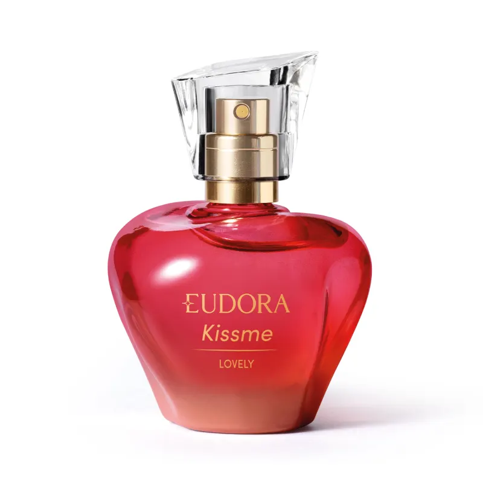

A origem da palavra perfume vem do latim "perfumum", que traduz-se como "pela fumaça". Antigamente, os povos primitivos conheciam as fragrâncias liberadas pelas florestas por meio da fumaça. Usado amplamente para proporcionar um aroma agradável e duradouro, o perfume é uma combinação de diferentes substâncias, incluindo óleos essenciais aromáticos, álcool e água. Os óleos essenciais são extraídos de flores, plantas e ervas por meio da destilação, além de se utilizarem compostos químicos aromáticos. Os perfumes apresentam uma variedade de fragrâncias, incluindo florais, orientais, doces e frutais. Na minha opinião, gosto de perfumes mais doces e alguns cítricos. No entanto, aqui vai algumas das minhas opções favoritas de perfume:
Ilia Deo Parfum Natura é uma fragrância floral que combina a intensidade das flores brancas com um complexo adocicado de baunilha e musk. Este perfume é harmoniosamente equilibrado com delicadas notas frutadas. Sua composição é enriquecida com um ingrediente natural extraído da paramela, conferindo uma singularidade marcante à fragrância. Ilia Natura é uma expressão de elegância e sofisticação.

Fragrância romântica Kiss Me Lovely tem notas aditivas e envolventes que combinam a doçura do algodão doce com a sofisticação e suculência do suspiro de frutas vermelhas. Além disso, a cremosidade das madeiras no fundo assina esta fragrância feminina para mulheres que amam seduzir com um toque extra de romance.
Aqui vai um vídeo com uma explição sobre o perfume Kiss Me Lovely.